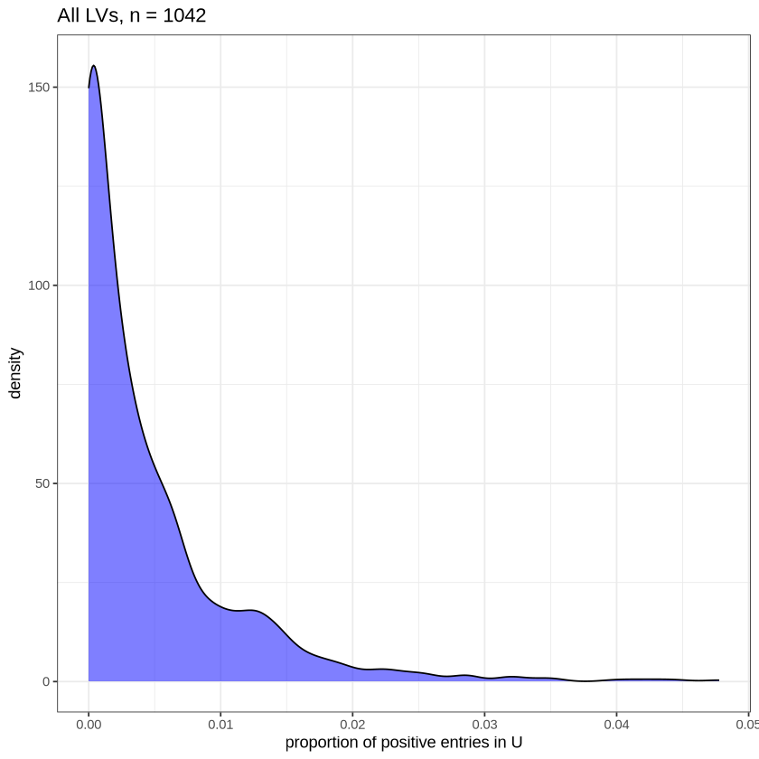
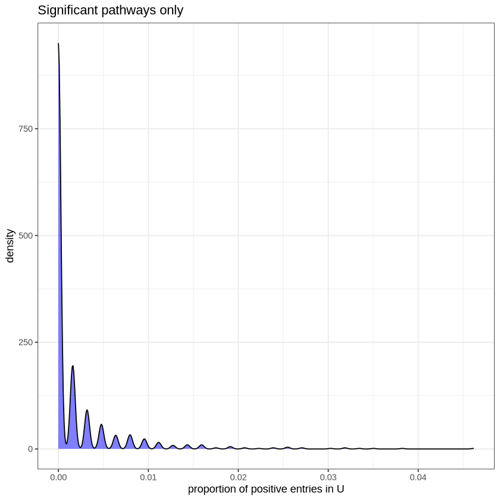

INPUT_PLIER_MODEL_FILE = NULL GTEX PLIER exploratory analyses
GTEX PLIER exploratory analyses
Marc Subirana-Granés (2024)
Pathway Level Information ExtractoR (PLIER) (Mao, et al. bioRxiv. 2017.) is a framework that explicitly aligns latent variables (LVs) with prior knowledge in the form of (often curated) gene sets. Comparisons of PLIER to other methods (e.g., sparse PCA) and other evaluations can be found in the PLIER preprint.
We’re going to explore the GTEx dataset and the corresponding PLIER model.
Settings and paths
Load libraries and data
library(PLIER)
library(ggplot2)
library(assertthat)
source(here::here('scripts/plier_util.R'))
INPUT_PLIER_MODEL_FILE='output/gtex/gtex_plier.rds'assert_that(!is.null(INPUT_PLIER_MODEL_FILE), msg = "Input PLIER model was not specified")
TRUE
Gene loadings (Z) or the latent space (B)
gtex_plier_results=readRDS(here::here(INPUT_PLIER_MODEL_FILE))
num_lvs <- nrow(gtex_plier_results$B)
matrixU <- gtex_plier_results$U
matrixZ <- gtex_plier_results$Z
matrixB <- gtex_plier_results$B
1042
Matrix U (gene sets x LVs)
head(matrixU)| LV1 | LV2 | LV3 | LV4 | LV5 | LV6 | LV7 | LV8 | LV9 | LV10 | ⋯ | LV1033 | LV1034 | LV1035 | LV1036 | LV1037 | LV1038 | LV1039 | LV1040 | LV1041 | LV1042 | |
|---|---|---|---|---|---|---|---|---|---|---|---|---|---|---|---|---|---|---|---|---|---|
| IRIS_Bcell-Memory_IgG_IgA | 0 | 0 | 0 | 0.0000000 | 0 | 0 | 0 | 0 | 0 | 0 | ⋯ | 0 | 0 | 0 | 0 | 0 | 0 | 0 | 0 | 0 | 0 |
| IRIS_Bcell-Memory_IgM | 0 | 0 | 0 | 0.0000000 | 0 | 0 | 0 | 0 | 0 | 0 | ⋯ | 0 | 0 | 0 | 0 | 0 | 0 | 0 | 0 | 0 | 0 |
| IRIS_Bcell-naive | 0 | 0 | 0 | 0.0000000 | 0 | 0 | 0 | 0 | 0 | 0 | ⋯ | 0 | 0 | 0 | 0 | 0 | 0 | 0 | 0 | 0 | 0 |
| IRIS_CD4Tcell-N0 | 0 | 0 | 0 | 0.0000000 | 0 | 0 | 0 | 0 | 0 | 0 | ⋯ | 0 | 0 | 0 | 0 | 0 | 0 | 0 | 0 | 0 | 0 |
| IRIS_CD4Tcell-Th1-restimulated12hour | 0 | 0 | 0 | 0.0000000 | 0 | 0 | 0 | 0 | 0 | 0 | ⋯ | 0 | 0 | 0 | 0 | 0 | 0 | 0 | 0 | 0 | 0 |
| IRIS_CD4Tcell-Th1-restimulated48hour | 0 | 0 | 0 | 0.1697034 | 0 | 0 | 0 | 0 | 0 | 0 | ⋯ | 0 | 0 | 0 | 0 | 0 | 0 | 0 | 0 | 0 | 0 |
If the prior information coefficient matrix, U, has a low number of positive entries for each LV, biological interpretation should be more straightforward. This is one of the constraints in the PLIER model.
All LVs
For each latent variable (i.e., not just those significantly associated with prior information), how many of the pathways/genesets have a positive entry?
num_lvs <- nrow(matrixB)
u_sparsity_all <- CalculateUSparsity(plier.results = gtex_plier_results,
significant.only = FALSE)
ggplot2::ggplot(as.data.frame(u_sparsity_all),
ggplot2::aes(x = u_sparsity_all)) +
ggplot2::geom_density(fill = "blue", alpha = 0.5) +
ggplot2::theme_bw() +
ggplot2::labs(x = "proportion of positive entries in U") +
ggplot2::ggtitle(paste("All LVs, n =", num_lvs)) Min. 1st Qu. Median Mean 3rd Qu. Max.
0.000000 0.000000 0.001592 0.004571 0.006369 0.047771 
summary(u_sparsity_all) Min. 1st Qu. Median Mean 3rd Qu. Max.
0.000000 0.000000 0.001592 0.004571 0.006369 0.047771 Significant pathways, only
What proportion of entries in the U matrix for each LV are significantly associated with that LV?
u_sparsity_sig <- CalculateUSparsity(gtex_plier_results,
significant.only = TRUE,
fdr.cutoff = 0.05)
ggplot2::ggplot(as.data.frame(u_sparsity_sig),
ggplot2::aes(x = u_sparsity_sig)) +
ggplot2::geom_density(fill = "blue", alpha = 0.5) +
ggplot2::theme_bw() +
ggplot2::labs(x = "proportion of positive entries in U") +
ggplot2::ggtitle("Significant pathways only")
summary(u_sparsity_sig) Min. 1st Qu. Median Mean 3rd Qu. Max.
0.000000 0.000000 0.000000 0.002051 0.001592 0.046178 Pathway coverage
coverage_results <- GetPathwayCoverage(plier.results = gtex_plier_results)What proportion of the pathways input into PLIER are significantly associated (FDR cutoff = 0.05) with LVs?
round(coverage_results$pathway, 3)
0.519
What proportion of the PLIER LVs have a gene set associated with them?
round(coverage_results$lv, 3)
0.349
Reconstruction of gene expression data
All LVs
We reconstruct gene expression data from the gene loadings and LVs.
# reconstructed GTEx expression data from PLIER model
recount_recon <- GetReconstructedExprs(z.matrix = as.matrix(matrixZ),
b.matrix = as.matrix(matrixB))
# write reconstructed expression to results
recon.mat.file <- file.path(results.dir,
"recount2_recount2_model_recon_exprs.RDS")
saveRDS(recount.recon, file = recon.mat.file)
# input expression data from intermediate file
recount.input.exprs <- recount.list$rpkm.cmMatrix Z (loadings; genes x LVs)
head(matrixZ)| GAS6 | 0.20762129 | 0.00000000 | 0.0000000 | 0.00000000 | 0.0000000 | 0.02653939 | 0.00000000 | 0.00000000 | 0.62387382 | 0.18440284 | ⋯ | 0.0000000 | 0.00000000 | 0.1552670 | 0.00000000 | 0.00000000 | 0.03676118 | 0 | 0.03729953 | 0.01813663 | 0.32003652 |
| MMP14 | 0.09893808 | 0.00000000 | 0.0000000 | 0.03620340 | 0.0000000 | 0.00000000 | 0.00000000 | 0.00000000 | 0.57073574 | 0.00000000 | ⋯ | 0.0000000 | 0.02603330 | 0.0000000 | 0.01795993 | 0.02515933 | 0.00000000 | 0 | 0.00000000 | 0.13488302 | 0.32878006 |
| MARCKSL1 | 0.00000000 | 0.00000000 | 0.0689154 | 0.00000000 | 0.0000000 | 0.06473675 | 0.00000000 | 0.00000000 | 0.06586991 | 0.04277300 | ⋯ | 0.1104464 | 0.00000000 | 0.0000000 | 0.00000000 | 0.00000000 | 0.00000000 | 0 | 0.00000000 | 0.00000000 | 0.07458389 |
| SPARC | 0.00000000 | 0.00000000 | 0.0000000 | 0.08840532 | 0.0000000 | 0.00000000 | 0.00000000 | 0.03131448 | 0.20514237 | 0.45000462 | ⋯ | 0.0000000 | 0.00000000 | 0.1168224 | 0.00000000 | 0.03407571 | 0.13301524 | 0 | 0.01732749 | 0.00000000 | 0.00000000 |
| CTSD | 0.00000000 | 0.09038044 | 0.3689761 | 0.05409820 | 0.1073371 | 0.00000000 | 0.00000000 | 0.09150932 | 1.38866053 | 0.02098779 | ⋯ | 0.0000000 | 0.02845362 | 0.2228255 | 0.00000000 | 0.00000000 | 0.00000000 | 0 | 0.00000000 | 0.04607547 | 0.54812303 |
| EPAS1 | 0.01069210 | 0.00000000 | 0.0000000 | 0.00000000 | 0.0000000 | 0.04134291 | 0.03603086 | 0.00000000 | 0.11679199 | 0.11713569 | ⋯ | 0.0000000 | 0.00000000 | 0.0000000 | 0.00000000 | 0.37824176 | 0.00000000 | 0 | 0.00000000 | 0.28356290 | 0.14947889 |
Matrix U - AUC
All LVs
num_lvs
1042
head(gtex_plier_results$U)| LV1 | LV2 | LV3 | LV4 | LV5 | LV6 | LV7 | LV8 | LV9 | LV10 | ⋯ | LV1033 | LV1034 | LV1035 | LV1036 | LV1037 | LV1038 | LV1039 | LV1040 | LV1041 | LV1042 | |
|---|---|---|---|---|---|---|---|---|---|---|---|---|---|---|---|---|---|---|---|---|---|
| IRIS_Bcell-Memory_IgG_IgA | 0 | 0 | 0 | 0.0000000 | 0 | 0 | 0 | 0 | 0 | 0 | ⋯ | 0 | 0 | 0 | 0 | 0 | 0 | 0 | 0 | 0 | 0 |
| IRIS_Bcell-Memory_IgM | 0 | 0 | 0 | 0.0000000 | 0 | 0 | 0 | 0 | 0 | 0 | ⋯ | 0 | 0 | 0 | 0 | 0 | 0 | 0 | 0 | 0 | 0 |
| IRIS_Bcell-naive | 0 | 0 | 0 | 0.0000000 | 0 | 0 | 0 | 0 | 0 | 0 | ⋯ | 0 | 0 | 0 | 0 | 0 | 0 | 0 | 0 | 0 | 0 |
| IRIS_CD4Tcell-N0 | 0 | 0 | 0 | 0.0000000 | 0 | 0 | 0 | 0 | 0 | 0 | ⋯ | 0 | 0 | 0 | 0 | 0 | 0 | 0 | 0 | 0 | 0 |
| IRIS_CD4Tcell-Th1-restimulated12hour | 0 | 0 | 0 | 0.0000000 | 0 | 0 | 0 | 0 | 0 | 0 | ⋯ | 0 | 0 | 0 | 0 | 0 | 0 | 0 | 0 | 0 | 0 |
| IRIS_CD4Tcell-Th1-restimulated48hour | 0 | 0 | 0 | 0.1697034 | 0 | 0 | 0 | 0 | 0 | 0 | ⋯ | 0 | 0 | 0 | 0 | 0 | 0 | 0 | 0 | 0 | 0 |